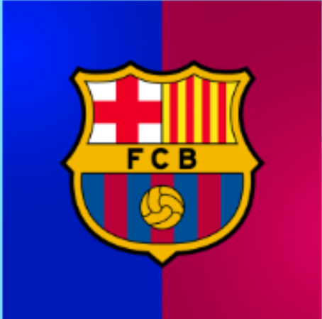
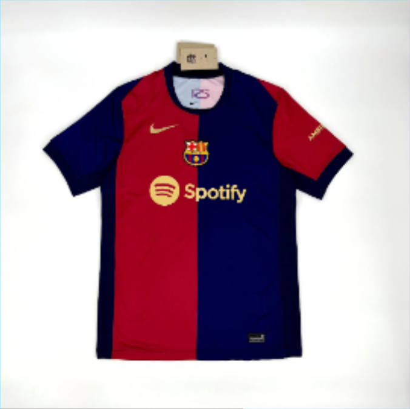
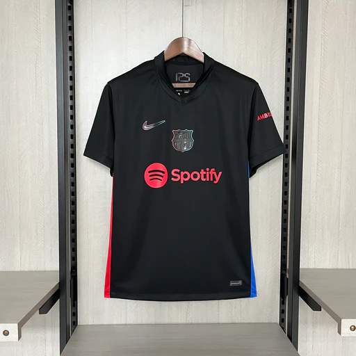

<!-- 1) შექმენით საიტი, სადაც დაამატებ H1 და შეუცვლი ფერს, ასევე ფოტოებს და ღილაკებს,
ღილაკებს შეუცვლი background color-s, ასევე შეუცვალეთ მთლიან საიტს background ფერი -->

<h1 style="color: blue;">Fc Barcelona</h1>

<br>

<br>

<br>
<button style="background-color: rgb(0, 50, 252);">Buy 24/25 Home Kit 79.99$</button><br><br> <br>
<button style="background-color: rgb(252, 0, 0);">Buy 24/25 Away Kit 79.99$</button><br><br> rgb(127, 223, 255);"></body>
<body style="background-color: rgb(127, 223, 255);"></body>